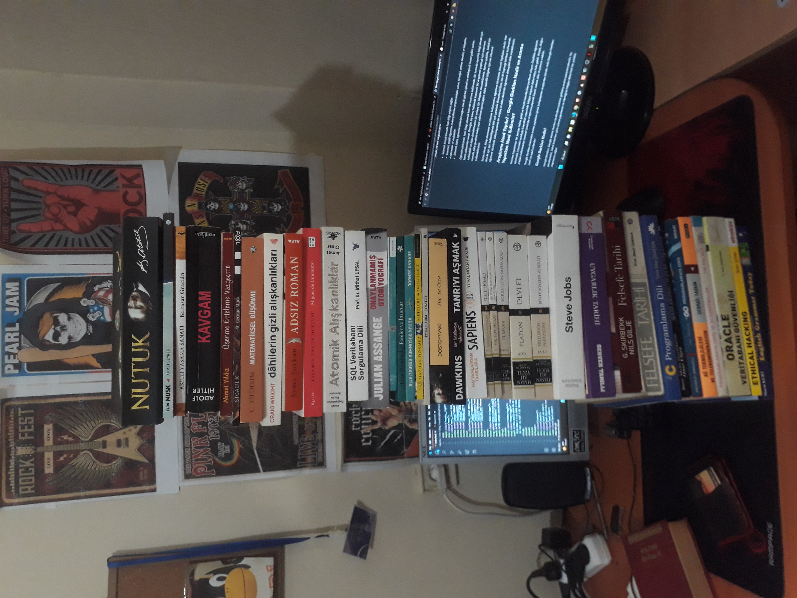

Merhaba, ben Mert. 16 yaşındayım ve gereğinden fazla meraklı bir kişiliğimle birlikte, iyi bir programcı ve hacker olma gayesinde olan bir vatandaşım. Hakkımda bilmeniz gereken her şeyi açıkladığım bu sayfaya göz atabilirsiniz => About
Öğrenim sürecinde kitapların ve internetin faydaları
Dün bir öğretmenim ile birlikte bir tartışma yaptık ve tartışmanın konusu kitap okumanın iyi olduğu ama internetin kötü olduğuydu. Bense buna katılmıyordum. Kitap okumanın kattığı ayrı şeyler, internetten öğrenilen şeylerinde kattığı ayrı şeyler olduğunu düşünüyorum. Bu sebeple, internetin bir şeyler öğrenim konusunda ki yararını ve internetin sadece sosyal medya ve diğer boş uygulamalardan ibaret olmadığını anlatan bir blog yazmak istedim. Ali hocaya selamlar :))
Hem kitap okumak hem de internet kullanmak, öğrenim sürecinde birbirini tamamlayıcı iki farklı kaynak olarak kullanılabilir. İşte nedenleri:
Kitap okumanın faydaları:
Kitaplar, yaratıcılık ve hayal gücü yeteneklerini artırır.
İnternetin faydaları:
Öğrenim sürecinde, hem kitap okumak hem de internet kullanmak, bir konuda ayrıntılı bilgi almak için farklı yaklaşımlar sunar. Örneğin, bir konu hakkında kapsamlı bir araştırma yapmak için interneti kullanabilir ve daha derinlemesine bir anlayış için kitapları okuyabilirsiniz. Benzer şekilde, belirli bir konuda daha genel bir bakış açısı edinmek için kitaplar, daha spesifik bilgiler için ise internet kullanabilirsiniz.
Şimdi ise öğrenim sürecinde hem interneti hem de kitapları kullandığımda bana ne gibi bir katkısı oluyor, bunlardan bahsedeceğim.
Örneğin, SQL (bir programlama dili) dilini öğrenmeye çalıştığımda internet üzerinden bir şeyler okuyup, izleyip öğrenmeye koyulmuştum. Ancak eğitim veren kişiler öğrendiğim şeylerin detaylarını bana veremiyordu. Bu durum beni rahatsız etti ve SQL ile ilgili bir kitap satın aldım.
Ama bu kitapta da uygulamalı şeyleri yapamıyordum çünkü pek güzel anlatamamış gibiydi ve daha çok bir arayüz kullanılıyordu. Ben ise terminal üzerinden işlemler yapmak istiyordum. Bu sebeple internetten kod örneklerine ve pratik birkaç anlatımın bulunduğu bloglara, makalelere ve pdf'lere baktım.
Sonuç olarak, uygulama kısmını internetten, teknik bilgi kısmını da kitaptan almaya karar verdim. Örneğin, X bir konu öğreneceksem o X konunun neye sebep olduğunu, ne yaptığını ve bazı örneklerini inceledim ve sonrasında o konunun detaylarını merak ettiğimden kitabımı açıp X konuyla ilgili bölümü okudum.
Böylece hem interneti hem de kitapları lehime kullanmış oldum. Kitaplar elbette çok yararlıdır ki ben de çok iyi bir okur olduğumu düşünüyorum, ancak öğrenim süreçlerinde kitaplar tek başına yeterli olmayabiliyor. Bu sebeple interneti kötüleyip kitapları yüceltmenin pek bir anlamı oluğunu düşünmüyorum öğretmenim.
Yazımı okuduğunuz için teşekkür ederim.
Okudugum kitaplar: 